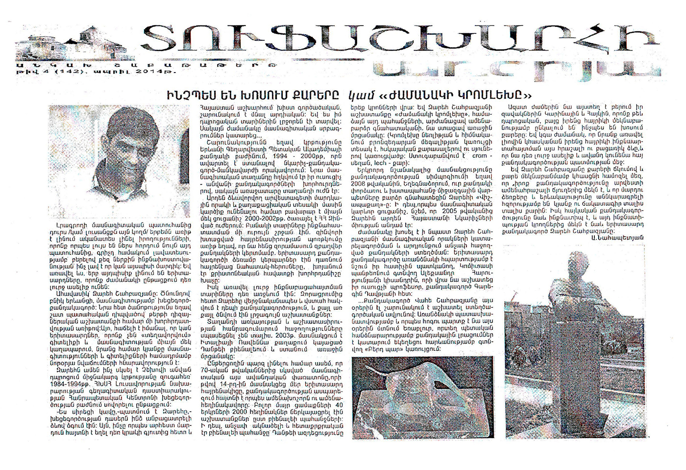
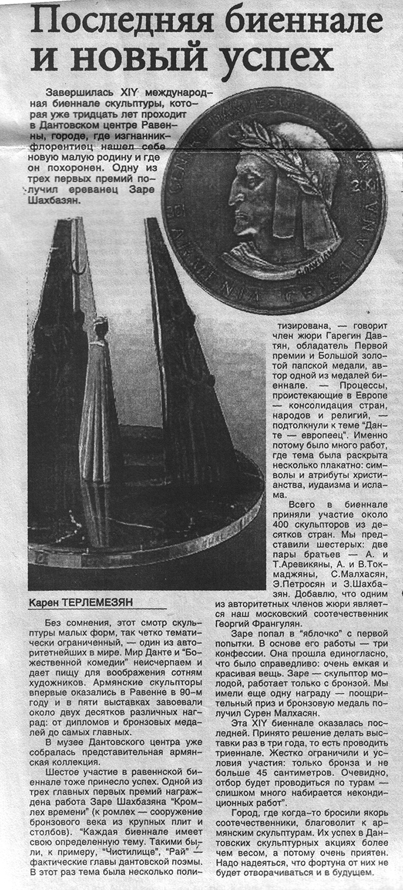

How do the stones speak or "Cromlech of the time"
At times, one can glimpse some other reality beyond the journalists' everyday routine that instills optimism and makes them confess: what a joy that there are such people, especially when they are young and have much time ahead to do something meaningful.
Zare shanbuzyan is that kind of a man. Aboriginal inhabitant of Yerevan. Ceramist - sculpturer by specialty.
Our acquaintance resulted from the chance meeting: we needed a piece of advice concerning a newspaper design. Yes, it is pleasant to know that young men do not fit into the typical mold of knowledge and specialty. He sees life as an opportunity for new achievements by harmonizing with wisdom.
It all started for him in 1984-1994-when he, as a secondary school n. a. Chenov, attended the Ceramics department of the Republican Center of Artistic Education by the Ministry of Education of Amenia.
"I loved clay," said Zare "Ceramic classes had been inexplicably attracting me. The thing that was familiar to the mankind as a craft since the use of fire and highly practiced and widespread in Armenia is still topical. And I was captivated by it as a schoolboy. But the time made some correctiors..."
In 1994-200 he continued his education at the Department ot Sculpture ot the State Academy of Fine Arts of Armenia and graduated with the qualification of "painter-sculptor-teacher". His artistic talent was refined by his tutors - renowned Armenian Sculplots, though his talent was the leading force.

To make an opinion concerning this young artist's human and civil features, it is enough to say that in 2000-2002 he served in Armenian military forces, and the years in the army had been a specific period of self-assertion. In a patriotic ardour, he started carving sculptures right in the regiment, carving the fallen heroes of the motherland and crosses - symbols of Christian faith.
Yet the period of the most severe self-knowledge was still ahead. After release, Zare was finally and confidently determined to continue as a sculptor. Step by step, conceptual works were born.
Success is not long in coming when the talent and industry meet. In 2003 he participated in the 11th Dante Biennale held in Ravenna, Italy and became the first prize winner.
Just for the readers' notice, I have to add that this traditional art festival that is the largest and most authoritative in Sculpture has been organized since the 70-es of the past century. Zare was among 2000 authors from 40 countries of all five continents who presented their works in compliance with the Biennale requirements, relating to Dante's influence on three religions. And Zare Shahbazyan's "Cromlech of the Time" was awarded the first prize.
His second significant achievement was at the Sculpture Symposium in Yeghegnadzor, Armenia, where the fastidious and demanding to please international experts in Sculpture highly appreciated Zare's work - "Vishapakagh." By the way, since 2005, Zare has been a member of the Artists Union of Armenia.
The time worked in favour of the perfection of Zare's professional qualities, and as a result- new extraordinary sculptures were created. As an object of his special pride, the young sculptor mentions the bust of Alexander Harutyunyan at the Komitas Pantheon belonging to his chisel jointly with his tutor, professor of sculpture Garegin Davtyan.
Sculptor Zare Shahbazyan is still working with the same creative ardor. With particular responsibility and as a duty of honour, he comes to Yerabloor where, by the government order, he is carving additional sculptures at the structure called "Berd Par" (Castle Dance) near the church.
At leisure, he takes his children there. Karina and Hayk are still studying at school, but in their father's interpretation, they start perceiving what the stones are speaking about. The time will come, and they will fully understand this fine and memorable way of their father's self-expression and that he is going to say his own word and contribute to the history of Armenian Sculpture.
Through bending and interpreting the stone, Zare Shahbazyan convinces us that Sculpture is one of the most delicate branches of art and that human imagination can breathe life and fate into the rock with immense might.
Zare Shahbazyan is distinctive. As distinctive as the Armenian Sculpture itself.